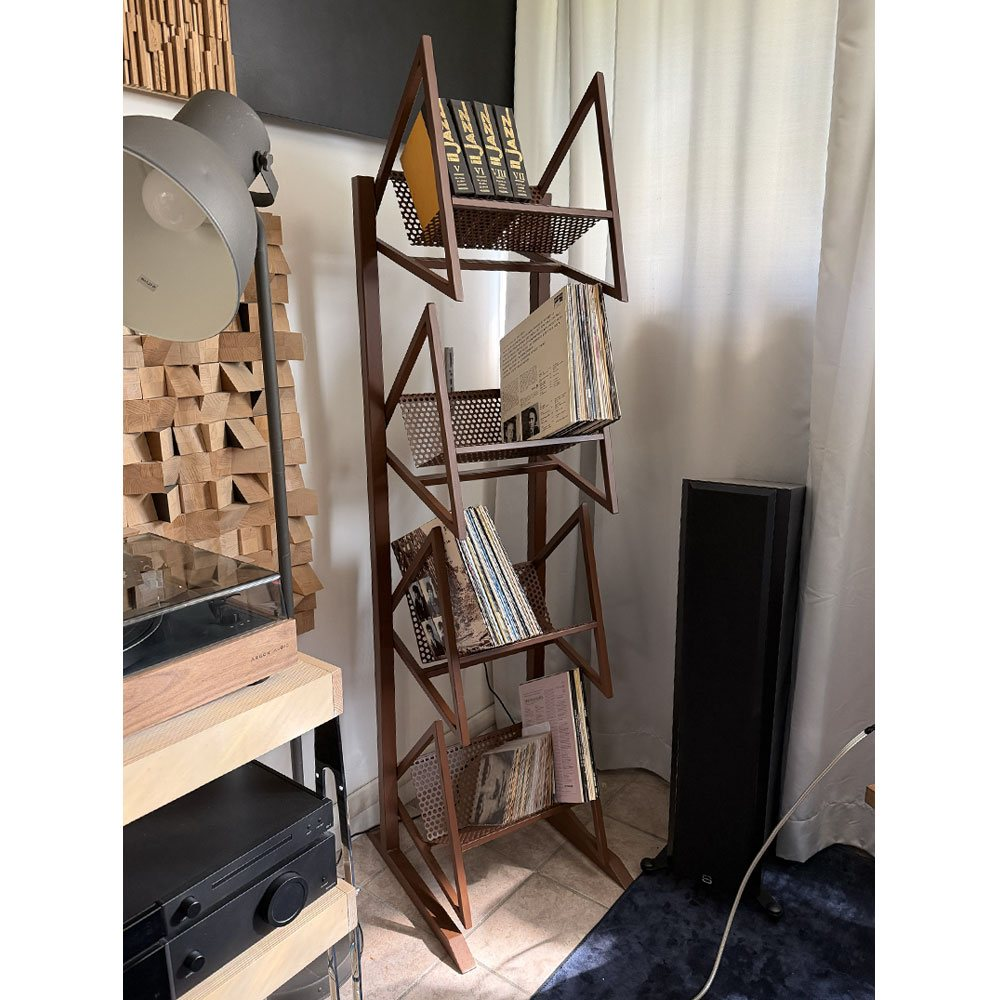
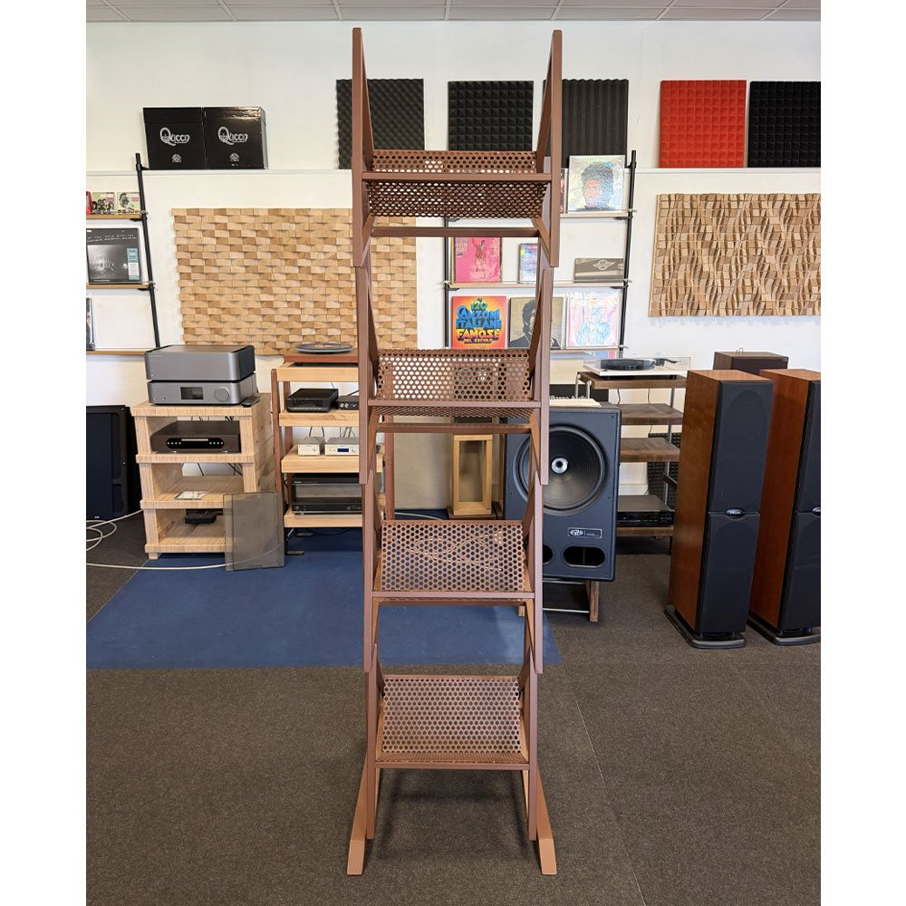
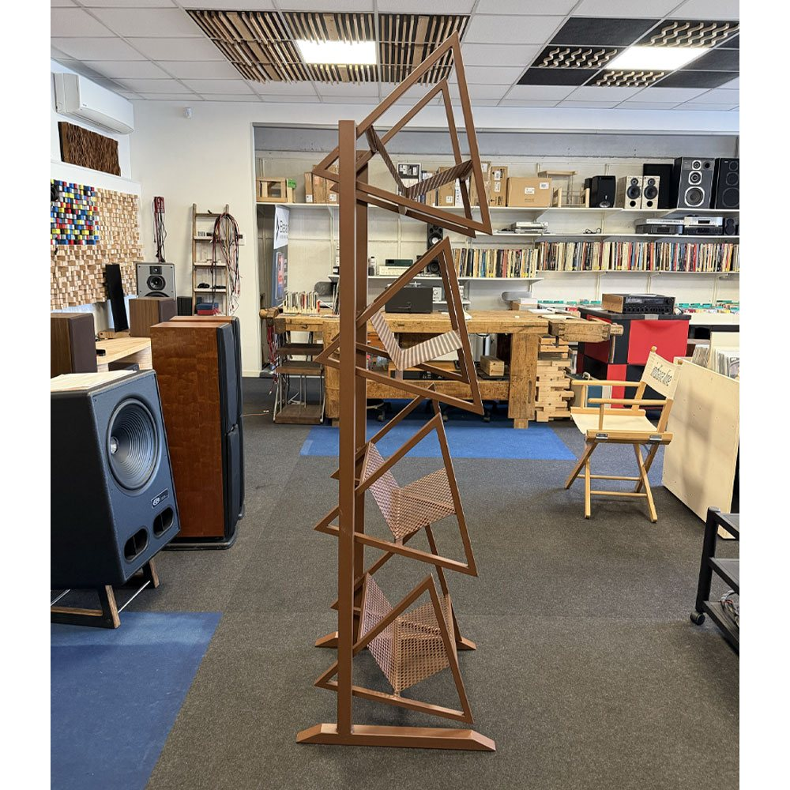
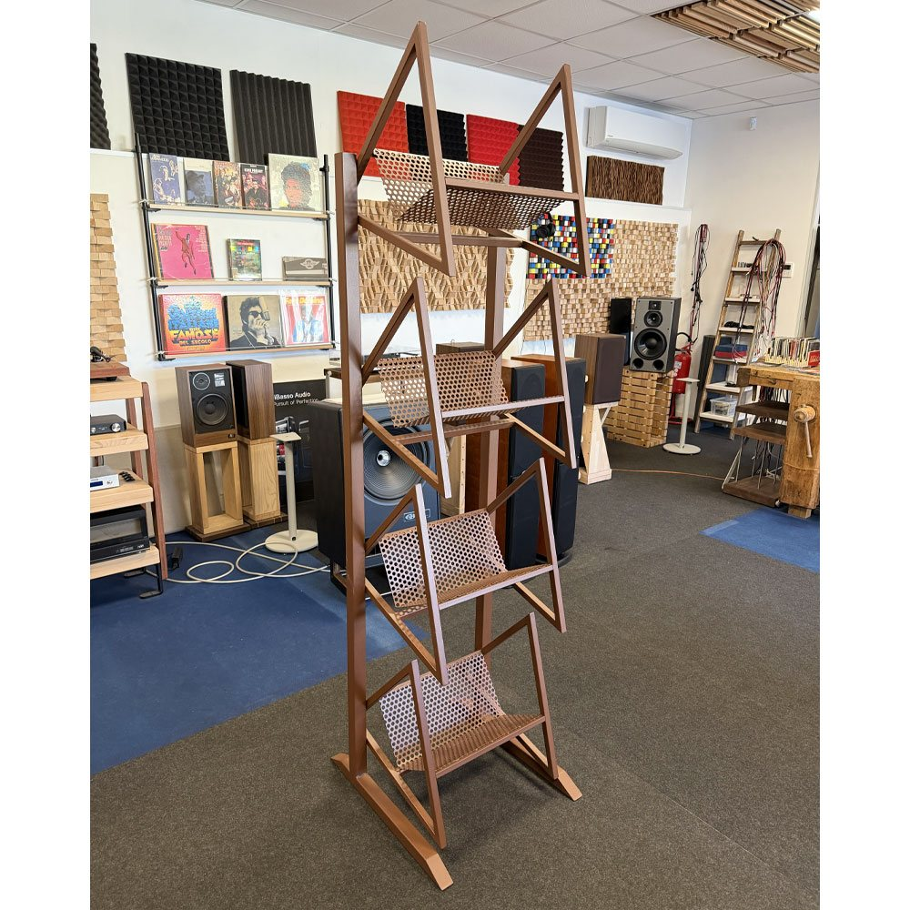
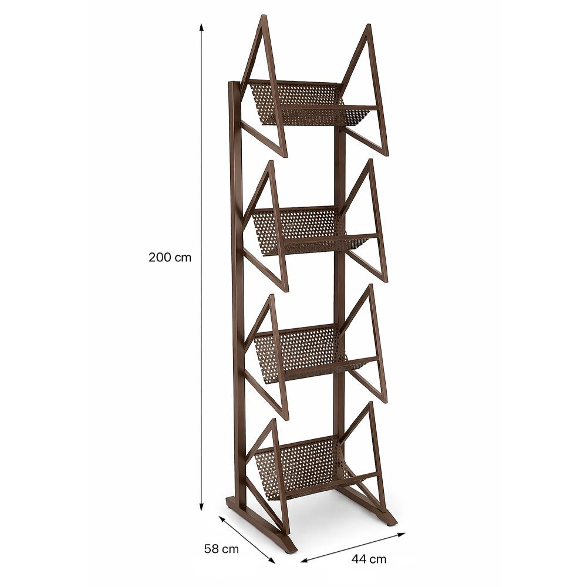

Porta vinili verticale
Extrasound Triangle
Un mobile porta vinili verticale in metallo, con quattro ripiani inclinati e fianchi a triangoli: occupa poco in larghezza e mette in vista le copertine.
- Struttura in metallo
- 4 ripiani per LP
- 200 cm di altezza




Le copertine sempre sotto gli occhi.
I ripiani inclinati rendono facile sfogliare i dischi da ascoltare. I fianchi con il disegno a triangoli danno al mobile un'aria vintage e industriale, a suo agio in una sala d'ascolto, in uno studio o in soggiorno accanto al giradischi.
La finitura brunita, sui toni del rame scuro, si accosta bene al legno dei mobili hi-fi.
Lo trovi nel nostro showroom di Cesena. Fabrizio lo costruisce anche nuovo, sulle misure dei tuoi apparecchi e della tua casa.
TipologiaPorta vinili verticale
MaterialeMetallo
Ripiani4, inclinati, per LP
FinituraEffetto brunito, rame scuro
Dimensioni (L × A × P)44 × 200 × 58 cm
DisponibilitàSu ordinazione